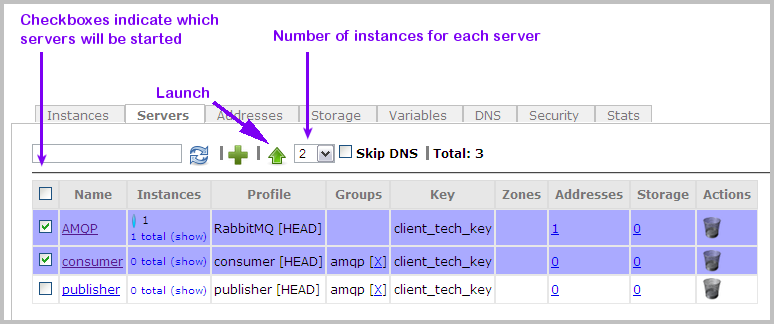
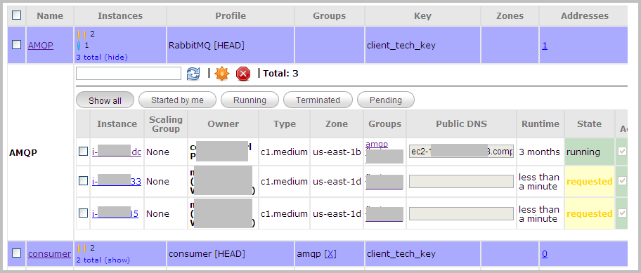
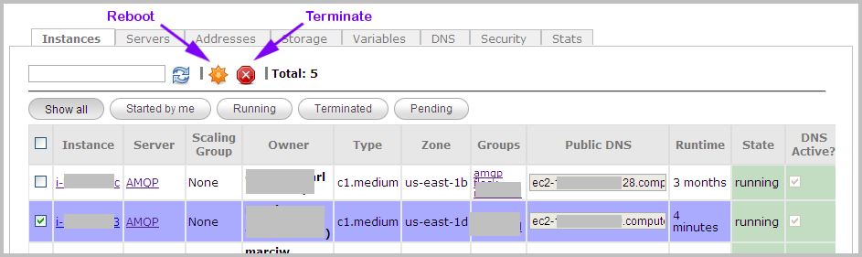

Launching and Terminating Instances
| PERMISSIONS REQUIRED |
| To launch and terminate instances, you need to have administrator access to the relevant cluster. To get access, contact your Nimbul administrator. See also Permissions and Roles and Clusters and Servers: Overview. |
Topics covered on this page:
Launch Instances
Reboot or Terminate Instances
Launch Instances
Note: Nimbul does not currently support EBS-backed instances.
To launch one or more instances, complete these steps:
- In the main Nimbul menu, click Clusters. A cluster summary page appears, showing the current instances and servers in each of the clusters to which you have access (grouped by provider account).
- Click the name of the cluster in which you want to launch a new instance. The cluster details page appears.

Click the Servers tab. - On the Servers tab, select the checkboxes to the left of the servers in which you want to start instances. (Do not click the server name; select the checkbox instead.)
Tip: You can use the text box at the top of the table to filter the list. - To launch multiple instances at once, select a number from the drop-down list to the right of the green launch icon (the up arrow). The number of instances will apply to each server you have selected.
 - To prevent the instances from acquiring hostname leases, select the Skip DNS checkbox. For more information about hostname leases, see the Hostnames Overview and Managing Hostnames.
- To launch the instances (the number you’ve specified, for the servers you’ve selected) click the green arrow icon. (See the image above.)
- For each server you have selected, the number of instances will increase and a status indicator will appear.
| Indicator | State |
| Running | |
| Ready | |
| Requested or Pending | |
| Shutting Down or Terminated |
To view more details, click the show link in the Instances column.

For more information, including definitions of terms that appear in the State column, see Viewing and Updating Instances.
Reboot or Terminate Instances
To reboot or terminate one or more instances, complete these steps:
- View a list of running instances using one of the following methods:
Provider account administrators only:
- In the main Nimbul menu, click Provider Accounts.
- Click the name of the provider account that contains the instances you want to terminate or reboot. The Instances tab for the provider account appears.
OR (All users with cluster access):
- In the main Nimbul menu, click Clusters. A cluster summary page appears, showing the current instances and servers in each of the clusters to which you have access (grouped by provider account).
- Click the name of the cluster that contains the instances you want to terminate or reboot. The Instances tab for the cluster appears.
- Select the checkboxes to the left of the instances you want to reboot or terminate.
Tip: You can use the text box and the buttons at the top of the table to filter the table. - To terminate the instances, click the red terminate icon above the list of instances.

OR
To reboot the instances, click the orange reboot icon (to the left of the terminate icon). (See image above.) - A message appears, confirming that you want to terminate or reboot the instances. Click OK.
- The instances will be terminated or rebooted. The State column for the instance will be updated throughout the process. To refresh the list of instances, click the blue refresh icon.
For more information about instance states and other metadata, see Viewing and Updating Instances.